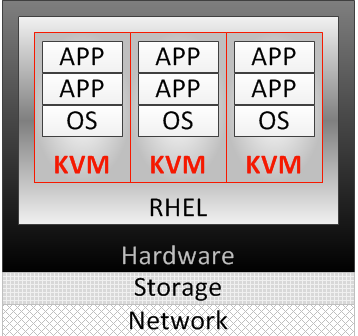
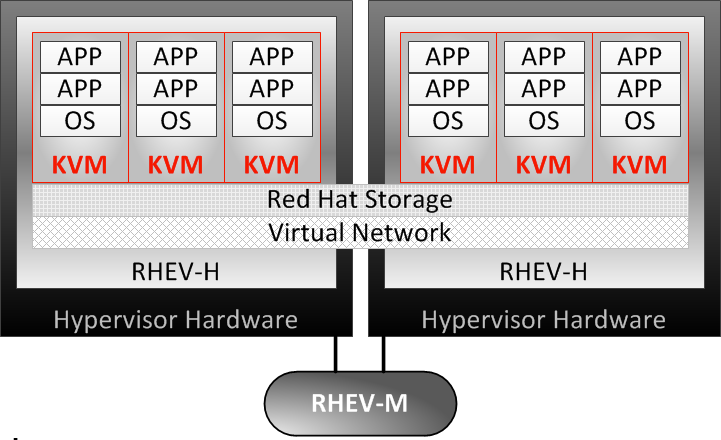
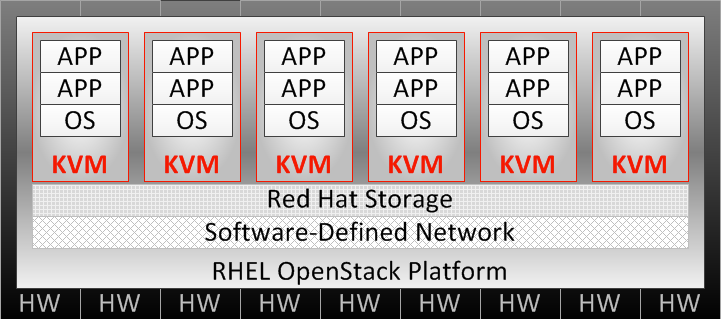
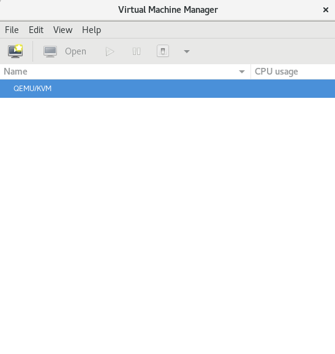
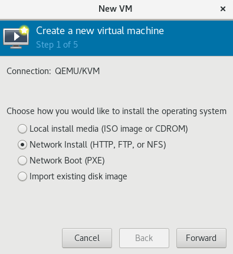
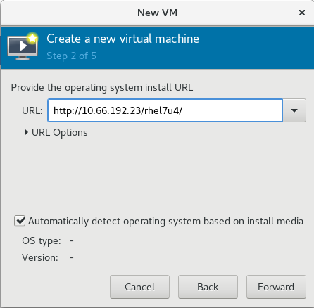
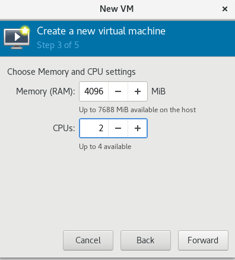
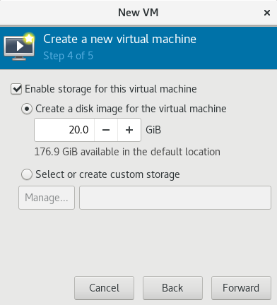
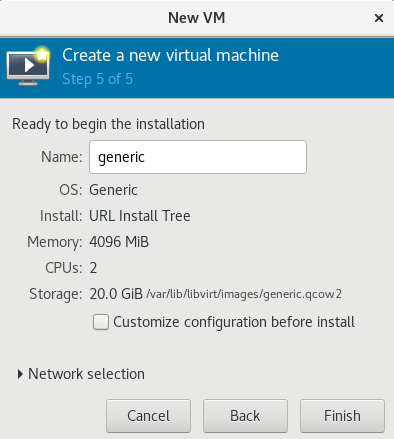

# yum install qemu-kvm libvirt virt-managerKVM
Table of Contents
本部分通过 virt-manager 安装 RHEL 7.4。
什么是 KVM
KVM（基于内核的虚拟机）是标准 RHEL 内核中内置的完整虚拟化解决方案。它可以运行 Windows 和 Linux 虚拟客户机操作系统，且对其不做任何修改。RHEL 中的 KVM hypervisor 通过 libvirt API 和一些小工具进行，如 virt-manager 和 virsh 等对虚拟机进行管理。
KVM 为 OpenStack 云平台提供虚拟机，通常 KVM 使用拓扑如下：
物理（传统）系统

RHEL 安装在传统硬件上，提供 KVM 虚拟化，最高可达单一系统的物理极限，并且由 virt-manager 等 libvirt 实用工具进行管理。红帽企业 Linux 通常配置为胖主机，即在支持 VM 的同时，也提供其他本地和网络服务、应用和管理功能。
红帽企业虚拟化 (RHEV)

支持跨越多个红帽企业虚拟化系统管理程序 (RHEV-H) 系统的 KVM 实例，提供由 RHEV 管理器 (RHEV-M) 管理的 KVM 迁移、冗余和高可用性。红帽企业虚拟化系统管理程序是瘦主机，是专门精简和调优过的 RHEL 版本，专用于满足配置和支持虚拟客户机 VM 的唯一目的。
横跨所有红帽产品的虚拟机 (VM) 技术，不仅包含 Red Hat Enterprise Linux 的单机物理实例，更有 OpenStack 云平台：
OpenStack 云平台

在默认安装有 KVM 的 RHEL 基础上使用集成和优化的 OpenStack 的有云架构，通过红帽 OpenStack 仪表板（Horizon 组件）或红帽 CloudForms 进行管理。
KVM 安装
install
NOTE：如上操作将安装的包包括：qemu-kvm, qemu-img, virt-manager, libvirt, libvirt-python, python-virtinst, libvirt-client。
-
python-virtinst — 提供 virt-install 命令，供创建虚拟机使用。
-
libvirt — 提供主机和服务器库，以便与系统管理程序和主机系统交互。
-
libvirt-python — 包含允许 Python 应用使用 libvirt API 的模块。
-
virt-manager — 为管理 VM 提供虚拟机管理器图形工具，将 libvirt-client 库用作管理 API。
-
libvirt-client — 为访问 libvirt 服务器提供客户端 API 和库，以及用于管理和控制 VM 的 virsh 命令行工具。
enable
# systemctl enable libvirtdstart
# systemctl start libvirtdstatus
# systemctl status libvirtd安装虚拟机
准备
| 类型 | 说明 |
|---|---|
CPU |
单核处理器或多线程满足虚拟客户机中最大虚拟化 CPU 数量的 CPU |
RAM |
2GB RAM，以及供虚拟机使用的额外 RAM。 |
DISK |
6GB 磁盘空间供主机使用，以及供每台虚拟机使用的必要磁盘空间。大多数虚拟客户机操作系统需要至少 6GB 磁盘空间，但实际存储空间要求取决于各个虚拟客户机映像的格式。 |
处理器类型 |
Intel VT-x，Intel 64 +86，AMD-V，AMD64 |
Start UI
Run virt-manager to start UI
start UI
# virt-manageryou will see the Virtual Machine Manager UI:

Create new VM
Click to start create a new VM, a new wizard will be pop up.
1. Choose the installation type

Note that the Network install be selected.
2. Paste the image URL

3. Set Memory and CPU

4. Create the Disk

5. Ready to Install

设定 KVM 快照
安装 qemu-img 包
yum install qemu-img停止虚拟机，创建快照
qemu-img snapshot -c [tag-of-snapshot] [path-to-vm-image]应用快照恢复虚拟机
qemu-img snapshot -l [path-to-vm-image]
qemu-img snapshot -a [tag-of-snapshot] [path-to-vm-image]创建快照示例
# cd /var/lib/libvirt/images/
# qemu-img snapshot -c 2018-02-14 test1.qcow2
# qemu-img snapshot -c 2018-02-14 test2.qcow2恢复快照示例
# qemu-img snapshot -l /var/lib/libvirt/images/test1.qcow2
Snapshot list:
ID TAG VM SIZE DATE VM CLOCK
1 2018-02-14 0 2018-02-14 22:46:49 00:00:00.000
# qemu-img snapshot -a 2018-02-14 /var/lib/libvirt/images/test1.qcow2
# qemu-img snapshot -l /var/lib/libvirt/images/test2.qcow2
Snapshot list:
ID TAG VM SIZE DATE VM CLOCK
1 2018-02-14 0 2018-02-14 22:56:26 00:00:00.000
# qemu-img snapshot -a 2018-02-14 /var/lib/libvirt/images/test2.qcow2KVM 管理
libvirt 软件包是独立于系统管理程序的虚拟化 API，通过提供在单一主机上配置、创建、修改、监视、控制、迁移和停止虚拟机的功能，安全地管理虚拟机。libvirt 软件包中的 API 可用于枚举、监控和使用托管系统上提供的资源，如 CPU、内存、存储和联网。利用 libvirt 的管理工具可以通过安全协议远程访问主机系统。
使用 libvirt 的常见 KVM 管理工具：
-
virt-manager - virt-manager 是一款图形化桌面工具，可以访问虚拟客户机控制台，用于执行虚拟机创建、迁移、配置和管理任务。可以通过单一界面管理本地和远程系统管理程序。
-
virsh - virsh 命令行管理工具是图形版 virt-manager 应用的替代工具。无特权用户能以只读模式使用 virsh，或者通过 root 访问权限使用完整的管理功能。virsh 命令是编写虚拟化管理脚本的理想选择。
-
RHEV-M - 红帽企业虚拟化管理器为物理和虚拟资源提供一个中央化管理平台，允许在主机之间启动、停止、构建和迁移虚拟机。RHEV-M 也可管理数据中心的存储和网络组件，提供安全的远程图形化虚拟客户机控制台访问方式。
virsh 命令示例
# virsh start test1
# virsh start test2
# virsh list
# virsh destroy test1
# virsh destroy test2
# virsh list --allvirsh 具有可执行其他管理任务的子命令：
-
connect — 使用 qemu:///host 语法连接本地或远程 KVM 主机。
-
nodeinfo — 返回主机的基本信息，如 CPU 和内存等。
-
autostart — 将 KVM 域配置为在主机系统启动时启动。
-
console — 连接到虚拟客户机的虚拟串行控制台。
-
create — 从 XML 配置文件创建域，并将它启动。
-
define — 从 XML 配置文件创建域，但不启动它。
-
undefine — 取消定义域。如果域为不活动，则域配置将被删除。
-
edit — 编辑域的配置文件，这会在虚拟客户机下一次启动时产生作用。
-
reboot — 重新启动域，就如从客户机内部运行 reboot 命令一样。
-
shutdown — 正常地关闭域，就如从虚拟客户机内部运行 shutdown 命令一样。
-
screenshot — 为当前域控制台抓取屏幕截图，并存储在文件中。
Kickstart 安装 RHEL
系统管理员可以使用名为 Kickstart 的功能自动执行 RHEL 的安装。红帽安装程序 Anaconda 需要知道如何安装系统：磁盘如何分区、配置网络接口，选择要安装的软件包等。默认情况下，这是一个交互式过程。Kickstart 安装使用的一个文本文件中提供这些问题的所有答案，因此无需进行交互。
Kickstart 配置文件编写规则：
-
# 字符开头的行是注释行，安装程序将会忽略
-
% 字符打头的行，结尾是包含 %end 指令的行。
-
%packages 部分指定要在目标系统上安装的软件。单个软件包可根据名称（不带版本）指定。软件包组可根据名称或 ID 指定，并以 @ 字符开头。环境组（软件包组的组）可使用 @^ 指定，后面紧跟环境组名或 ID。组具有必需、默认和可选组件。通常，Kickstart 将安装必需组件和默认组件。以 - 字符开头的软件包名或组名将被排除在安装以外，除非它们为必需，或因其他软件包的 RPM 依赖关系而安装。
-
%pre、%post，它们在所有软件都已安装后对系统进行配置。%pre 脚本在进行任何磁盘分区之前执行，%pre、%post 和 %packages 可以在配置命令之后以任何顺序出现。
生成 Kickstart 安装描述文件
# yum install system-config-kickstart
# system-config-kickstart
# ksvalidator anaconda-ks.cfgSetup RH299 VM
1 - Edit RH299
virsh edit RH2992 - Modify CPU part, make sure it looks
<cpu mode='host-model' check='full'>
<model fallback='allow'/>
<feature policy='require' name='vmx'/>
</cpu>|
Note
|
check='partial' also works. |
3 - execute modprob
modprobe -r kvm_intel
modprobe kvm_intel nested=14 - Confirm nested virtualization is enabled
# cat /sys/module/kvm_intel/parameters/nested
Y